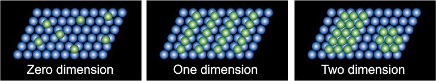

表面に局在した電子構造の研究
半導体デバイスの大容量化、省電力化、高速化を達成するために小型化は不可欠であり、ナノスケールの表面加工には量子効果による電子物性を用いる必要がある。 また、半導体基板上に金属原子を吸着することで形成される低次元構造や薄膜を研究をすることは次世代半導体デバイスの発展に欠かせないものである。 半導体基板上の金属原子による低次元構造は、次元の低下から量子井戸やShottky 障壁などの興味深い量子力学的物理現象が期待されている。

STM グループでは、Ⅲ、Ⅳ族原子をSi 基板上に吸着させ蒸着量に応じた一次元細線や二次元超薄膜を作製し、走査トンネル電子顕微鏡(STM)と走査トンネル分光(STS) を活用して表面構造と電子状態について研究を行っている。
STM and STS
Scanning Tunneling Microscope：STM
Scanning Tunneling Spectroscopy：STS
走査トンネル顕微鏡（Scanning Tunneling Microscope：STM）とは「原子を見る」ことのできる顕微鏡で、原子レベルで試料表面を三次元空間で観測することが出来る。 そのため、ナノ構造体の研究の最先端で活躍している実験手法である。 測定方法は、図のように探針と呼ばれる針を試料表面1nmまで近づけると、量子力学的な効果でトンネル電流が探針と試料間で流れる。 これは、探針から染み出した波動関数と試料から染み出した波動関数が重なることで一方へ電子が流れ出る効果である。 STM では、このトンネル電流を一定に保ち試料表面をスキャンさせることで表面を画像化している。
走査トンネル分光（Scanning Tunneling Spectroscopy：STS）は、元素選択的に原子の占有状態・非占有状態の電子状態密度を観測できる。 STS は、探針と試料の垂直方向の間隔を固定し、バイアス電圧と変えながらトンネル電流を測定する。 この電流-電圧特性を調べることで、測定した位置の状態密度を得ることができ、試料表面の局所電子状態を定性的に知ることが出来る。
例として、図にSi(111)7x7再構成表面のSTM像を示す。 Si原子一つ一つとSi表面にできたホールを確認できる。

現在、広島大学放射光科学研究センター(HiSOR) には常温で測定するRT-STMと常温・低温（4K以上）で測定できるLT-STMがあり、それぞれSiに金属を蒸着する、金属単結晶を観測するなどして活発的に活動している。
研究成果
温度と蒸着量によって様々な形態をとることができる。